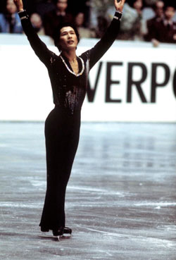
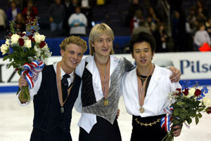
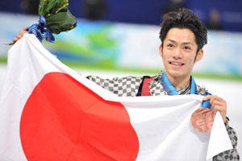
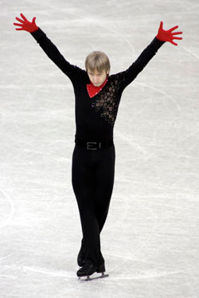
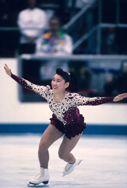
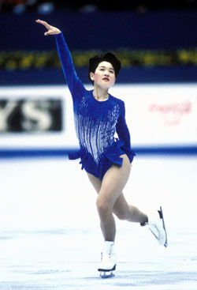
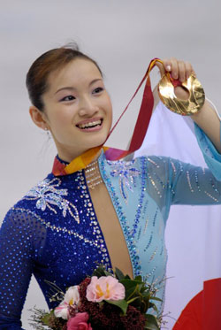

冬季オリンピックスポーツ
フィギュアスケート
フィギュアスケートは、氷上で、音楽と調和させたスケーティングや、ジャンプ、スピン、ステップといった技術を競い合うスポーツだ。美と技とスピード、高い基礎点を狙いながら高い芸術性を追求する、その狭間で繰り広げられる魂のこもった演技。その融合から生まれくる感動とドラマがフィギュアスケートの魅力と醍醐味だと言える。
発祥と歴史
スケートの発祥―現在のフィギュアスケートになるまで
13世紀頃オランダで生まれた曲線滑走をする技術がフィギュアスケートの起源である。その後イギリスに渡り、いろいろな図形を滑走すること（コンパルソリーの基礎）に発展し、フィギュアの語源となる規定図形の競技が生まれた。
19世紀中頃、アメリカ人スケーターにして元バレエダンサーであるジャクソン・ヘインズが、バレエのポーズやダンス・ステップを取り入れ、ヨーロッパでウィンナワルツに出会ったことでスケーティングに音楽を取り入れることを考案した。ベートーヴェンやシューベルトの曲を使用することで脚光を浴び、音楽に合わせたスケーティングにバレエの要素を取り入れるスタイルが広まり、今日のフリースケーティングの原型となった。
一方、1963-64年シーズンからペア競技でショートプログラムの前身であるコネクテッドプログラムを採用した。後に1972-1973年シーズンから男子シングル、女子シングルにもショートプログラムが導入される。（コンパルソリーフィギュアは1989-1990年シーズンを最後に完全に廃止）
競技会が始まったのは1882年。ウィーンでウィーンスケートクラブ主催の国際フィギュアスケート競技会が開催された。種目は23課題のコンパルソリーフィギュア、1課題のスベシャルフィギュア（スケーター自身が創意工夫を凝らし、より複雑かつ精巧な図形を描く）、4分間のフリースケーティング。1891年には第1回ヨーロッパ選手権が開催され、ドイツとオーストリア両国の選手7名が参加し、男子シングルのコンパルソリーフィギュアのみで争われた。
ジャンプが取り入れられたのは1920年代。スケート選手ではなく、アイスショーの役者であったブルース・メープが初めてトウループ・ジャンプを行ったことから。サルコウは20世紀初頭にスウェーデンのウルリッヒ・サルコウが、ループは1910年にドイツのヴェルナー・リットベルガーが、ルッツは1913年にオーストリアのアロイス・ルッツが、アクセルは1882年にノルウェーのアクセル・パウルセン行ったのがその始まりである。フリップは発案者の記録が残っていない。
音楽が用いられるようになった当初はシュトラウスやモーツァルトの音楽に合わせ、ワルツやマーチのステップで滑走していた。その後、バレエや社交ダンスで用いられるダンスの動きを取り入れたことで格段に発展し、オペラ音楽、バレエ音楽、ミュージカル音楽、ピアノ音楽、オーケストラ音楽、映画音楽、民族音楽、ジャズ音楽など多彩な音楽を使用するようになった。また、シングルおよびペア競技ではこれまで禁止されていたボーカル曲を2014－15シーズンより使用できるようになったことで、選曲の幅が広がった。
{kind=link}
{kind=link}
オリンピックにおける競技の歩み
世界初のフィギュアスケートの国際競技会は前述の通り、1882年、オーストリアで開催された。1892年にイギリス、オランダ、オーストリア、ドイツ、スウェーデンが参加して国際スケート連盟（ISU）が発足し、1896年にサンクトペテルブルク（ロシア）で初めての世界選手権が開催された。このときの課題は規定図形12種類と5分間のフリースケーティングで、男子シングルのみであった。1924年に女子、ペアが採用され、アイスダンスは1952年に採用された。
オリンピック競技としては、1908年に開催されたロンドンオリンピックで男女シングルとペア、スペシャルフィギュアの4種目が初めて採用され、1920年アントワープオリンピックでは、男女シングルとペアの3種目で再び実施された。冬季オリンピックが始まると、第一回の1924年シャモニーオリンピック以降、男女シングルとペアの3種目が実施され、1976年のインスブリックオリンピックからはアイスダンスも正式競技に採用された。
第1回目の世界選手権以来必要課題であった氷上を滑走し図形を描くコンパルソリーは、1990年に競技会から廃止された。しかし、基礎練習として現在の選手たちに見直されている。
国際スケート連盟の競技会で宙返りなど縦回転のジャンプを行うことは禁止されている（エキシビションは可）。フィギュアスケートは氷上にスケートの軌道で図形を描く競技であり、コンパルソリーに縦方向の回転が存在しないことと、危険防止のためというのが理由とされている。
日本における競技の歩み
日本フィギュアの始まりについては、新渡戸稲造が札幌農学校に3足のアメリカ製スケート靴を持ち帰ったという説、同じく札幌農学校のアメリカ人教師ウイリアム・ブルックスがスケート用具を日本に持ち込んだという説の2つがある。その後、盛岡、仙台などで米人宣教師に指導を受けた河久保子朗が1915年にフィギュアスケートの入門書「氷滑」を出版したのをきっかけに、国内でフィギュアスケートが本格的に広がり始めた。
1929年に大日本スケート競技連盟が説立され、翌年の1月に全日本選手権を初めて開催し、「世界に追いつけ」を合言葉に世界との差を縮めることを目標とした。また、1932年レークプラシッドオリンピックには代表選手を2名、1936年ガルミッシュパルテンキルヒェンオリンピックには５名送り出している。しかし、国際情勢の悪化が影響し、日本は1940年に開催が決定していた冬の札幌大会と夏の東京大会を返上。第2次世界大戦終結後の1952年のオスロ冬季大会でオリンピックに復帰するまで16年にわたるブランクを作り、フィギュアスケート日本人選手の参加は1960年まで待たねばならなかった。
その後、1977年に佐野稔が世界選手権で日本人初の銅メダルを獲得。1979年に渡部絵美が銅メダルを獲得して世界との差を少しずつ縮め始め、女子で初めてトリプルアクセルを習得した伊藤みどりが突出した存在になり、1989年に日本人初の世界女王になる。1992年のアルベールビルオリンピックでは銀メダルを獲得した。1994年には佐藤有香が世界選手権で優勝し、ジャンプのみならずスケーティングの重要性を世界にアピール。2002年には世界に誇るジャンパー本田武史と氷上のアクトレスと呼ばれる村主章枝が世界選手権で銅メダルを獲得し、シングルでの日本人選手の世界的な活躍が目覚しくなる。
しかしながらフィギュアスケートの今の隆盛のきっかけは荒川静香が2006年トリノオリンピックでアジア初の金メダルを獲得したことであろう。金メダリストに憧れてフィギュアスケートを始める選手が増え、それが今日の若手の活躍につながっている。また、2010年にバンクーバーオリンピックで浅田真央が銀メダルを、髙橋大輔が男子シングルの選手としては史上初の銅メダルを獲得。そのほか、織田信成、小塚崇彦、安藤美姫、鈴木明子と日本代表選手は全員入賞し、日本フィギュアの強さを世界に印象づけた。2014年ソチオリンピックでは19歳の羽生結弦が金メダルを獲得。町田樹、髙橋大輔も入賞した。羽生は翌シーズン、さらなる進化を見せ、グランプリファイナルのショートで2本の4回転、フリーでは3度の4回転を成功させて330.43点を獲得。他選手の追随を許さない得点を叩き出し、史上初のグランプリファイナル3連覇を遂げた。羽生はピョンチャンオリンピックでの2連覇を目指している。
{kind=link}
{kind=link}
競技の概要、特徴
| フィギュアスケート：採点競技 | |||
|---|---|---|---|
| シングル | ペアスケーティング | アイスダンス | シンクロナイズドスケーティング |
| オリンピック種目 PHOTO KISHIMOTO
|
オリンピック種目 PHOTO KISHIMOTO
|
オリンピック種目 PHOTO KISHIMOTO
|
PHOTO KISHIMOTO
|
{kind=link}
{kind=link}
{kind=link}
{kind=link}
競技種目
| 男子ショートプログラム：SP | 女子ショートプログラム：SP | |
|---|---|---|
| 演技時間 | 2分30〜50秒 | 2分30〜50秒 |
| アクセル・ジャンプ | 2回転、または3回転 | 2回転、または3回転 |
| ステップからのジャンプ | 3回転、または4回転 | 3回転 |
| コンビネーションジャンプ | 2回転＋3回転、3回転＋3回転、4回転＋2回転、4回転＋3回転 |
2回転＋3回転、3回転＋3回転 |
| フライングスピン | 8回転以上 | 8回転以上 |
| キャメル、またはシットスピン | 足換え1回のみ、各足6回転以上 | ー |
| レイバック又はサイドウェイズリーニングスピン | ー | 8回転以上 |
| コンビネーションスピン | 基本3姿勢《シット、キャメル、アップライト》を全て含む、足換え1回のみ、各足6回転以上、各姿勢2回転以上 | 基本3姿勢《シット、キャメル、アップライト》を全て含む、足換え1回のみ、各足6回転以上、各姿勢2回転以上 |
| ステップシークエンス | リンク全面を使用 | リンク全面を使用 |
| 男子フリースケーティング：FS | 女子フリースケーティング：FS | |
|---|---|---|
| 演技時間 | 3分50秒～4分10秒（2018-19シーズン～） | 3分50～4分10秒 |
| ジャンプ | 8回まで | 7回まで |
| ・アクセル・ジャンプ 1回以上 ・2回転アクセルは2回まで ・コンビネーションジャンプは3回まで（3連続ジャンプは1回のみ） ・同種類のジャンプ（3回転・4回転）は2回まで そのうち1回は必ずコンビネーション、またはシークエンスに組み込まれたジャンプであること 同種類でも回転数が違えば違うジャンプとみなされる |
||
| スピン | 3回まで ・コンビネーションスピン1回、足換え1回以上、合計10回転以上 ・フライングスピン、もしくはフライングから入るスピン1回/6回転以上 ・単一姿勢でのスピン1回/6回転以上 ・3つとも異なる種類（異なる略記号）のスピンであること |
|
| ステップシークエンス | 1回まで リンク全面を使用すること、ジャンプを入れても良い |
|
| コレオグラフィックシークエンス | 1回まで ・あらゆる種類の動作で構成される ・リンク全面を使用すること ・ステップシークエンス後に行う |
|
採点方法
TES（トータル・エレメンツ・スコア）と呼ばれる技術点と、PCS（プログラム・コンポーネンツ・スコア）と呼ばれる芸術点の2つから成る- ①TES技術点：ジャンプ、スピン、ステップ、コレオシークエンスの難度に応じた基礎点と、GOE（Grade of Execution、演技の出来栄え点）の合計
- ②PCS芸術点：スケーティング技術、技と技のつなぎ、演技力、振付け、音楽解釈の5つの視点で芸術性を評価
＊２種類の評価は一般に公開される
| ①ショートダンス：SD |
||
|---|---|---|
| 演技時間 | 2分40～3分00秒 | |
| 構成 | シーズン毎に指定されるリズムとテーマに合わせ、5つの規定要素が含まれたプログラムを滑走する ＊プログラムは「パターンダンスパート：1分」と「クリエイティヴパート」で構成される |
|
| パターンダンスパート | リズム | ポルカ |
| 規定2要素 | ヤンキーポルカを2セクション | |
| クリエイティヴパート | リズム | マーチ、ワルツ |
| 規定3要素 | ショートリフト1回、ミッドライン・ノットタッチング・ステップシークエンス、 またはサーキュラー・ノットタッチング・ステップ・シークエンス1回、シークエンシャルツイズル1回 |
|
| ②フリーダンス：FD |
||
| 演技時間 | 3分50～4分10秒 | |
| 構成 | 自由なリズムで構成し、 リフト、ダンススピン、ステップシークエンス、シンクロナイズドツイズルなどの規定された要素を使用する ショートリフト ロングリフト コレオグラフィックダンスリフト ダンススピン ストレートラインステップシークエンス・イン・ホールド カーヴド・ステップシークエンス・イン・ホールド シンクロナイズドツイズル |
|
| ①ショートプログラム：SP （2015-16シーズンの規定 ） |
②フリースケーティング：FS | |
|---|---|---|
| 演技時間 | 2分50秒以内 | 3分50秒～4分10秒（2018-19シーズン～） |
| 任意のプレス・リフト | ハンド・トゥ・ハンド・ポジション | ー |
| ツイストリフト | 2回転または3回転 | 1回まで |
| リフト | ー | 最大3回まで ・異なる種類のリフトであること ・そのうち一つはグループ3：ハンドトゥヒップまたは、グループ4：ハンド・トゥ・ハンド |
| スロージャンプ | 2回転または3回転 | 2回まで/別種類でなければならない |
| ソロジャンプ | 2回転または3回転 | |
| 単独ジャンプ | ー | 1回まで/2回転以上 |
| ペアスピンコンビネーション | 足換え1回のみ | 1回まで/足換え1回、姿勢変化1回、両足8回転以上 |
| デススパイラル | バックワード・アウトサイド | 1回まで/ショートプログラムと別種類でなければならない |
| ジャンプコンビネーション、またはジャンプシークエンス | ー | 1回まで/2連続、もしくは3連続ジャンプ |
| ソロスピンコンビネーション | ー | 1回まで/足換え 1 回、姿勢変化1回、両足10回転以上 |
| ステップシークエンス | リンク全面を使用 | ー |
| コレオグラフィックシークエンス | ー | ・あらゆる種類の動作で構成される ・スパイラル必須 ・リンク全面を使用すること |
| ①ショートプログラム：SP | ②フリースケーティング：FS | |
|---|---|---|
| 演技時間 | 2分50秒以内 | 4分20～40秒 |
| 構成 | チームで選択した曲に合わせ、規定された7種類の要素を含めて演技する | チームで選択した曲に合わせ、10種類の要素を含めて演技する |
スケート靴
- ＊ブレード：刃は靴の長さとほぼ同じ
- ＊ブレードは3mm前後の幅で、トウピック（つま先のギザギザ部分）と、外側（アウト）、内側（イン）を使い分けて演技する
- ＊アイスダンスのブレードはトウピックが小さい。
{kind=link}
衣装
フィギュアスケートの衣装は「美」を競う競技ならではの工夫、特徴がある。表現力が重要視されるにつれ、衣装にもバリエーションが増え、世界観を表しやすいデザインや素材を使用し趣向を凝らしている。素肌かと見間違うような生地（ストレッチチュール）を使用し肌の露出を避ける工夫、装飾品などが落下しないようにする配慮、フィット感や軽さなど各選手のプログラムに相応しいコスチュームを用意する。以前はクラシックバレエの伝統を受け継ぎスカートを着用しなければならなかったが、近年は表現の幅が広がったことや様々なポジションを気にせずに演じやすいことを考慮され、2004年のルール改正により女子シングルとペアの女性はパンツスタイルも可能となった。
＊規定（抜粋）
- ①肌を露出してはならない
- ②男性は完全な長ズボン、長袖を着用すること
- ③小道具は許可されない
- ④衣装の一部、飾りなどが外れてはならない（氷上に落下すると1.0 点の減点）
スケートリンク
| リンクの大きさ | 国際規格では最大60m×30m、最小56m×26m |
|---|---|
| 氷の厚さ | 8ｃｍが標準 |
| 製氷、氷の質 | 霧状にお湯を散布して冷却水の通っているパイプで徐々に凍らせ、徐々に氷を厚くしていく。床下にパイプを敷き詰め、冷却水を循環させることできめ細やかに管理されている。また、氷を作る途中で氷に白ペンキを塗るなど、見た目の色や美しさに工夫が凝らされている。 |
| キスアンドクライ | 演技を終えた選手とそのコーチが得点発表を待つ場所。名前のとおり、笑いや涙、感動や落胆など、多彩な表情がうかがえる。 |
{kind=link}
ジャンプやステップ等、主な技と採点ポイント
| 名称 | 概要 | |
|---|---|---|
| トウループ・ジャンプ | 右足外側のエッジに乗り、左足のトウをついて踏み切るジャンプ | コンビネーションジャンプの２つ目によく使われる、多様性のあるジャンプ。 |
| サルコウ・ジャンプ | 左足内側のエッジで滑りながら、右足を前上方に振り上げて跳ぶ | ジャンプする直前の体の進行方向が、ジャンプの回転方向と同じ。 |
| ループ・ジャンプ | 右足踏み切りで、トウを使わずに跳ぶ | 左足を少し前に出して、滑ってきた勢いを使って踏み切る |
| フリップ・ジャンプ | 左足内側のエッジに乗り、右のトウをついて跳ぶ | ルッツと見分けるのが難しい。 |
| ルッツ・ジャンプ | 左足外側に体重を乗せ、トウをついて跳ぶ | 「左足内側エッジ」に体重を乗せてしまうと、正しくないエッジと判定されて減点対象となる。 |
| アクセル・ジャンプ | 唯一前向きで踏み切り跳ぶ 着氷は常に後ろ向きになるので回転数は1/2回転加わる |
トリプルアクセル：3回転半は、女子はもちろん男子にとっても高難度。 |
| スピン | 基本的なスピンは3種類 1．直立したアップライト系スピン 2．しゃがんだ状態のシット系スピン 3. 上体と片足を氷と平行の位置に保ち、T字型になって回るキャメル系スピン ※難度に合わせレベルＢ、1から4の5段階評価 |
姿勢を次々と変化させたり、足を換えたり、柔軟性の高い姿勢をとるなど、さまざまなバリエーションがある。 |
| ステップシークエンス/コレオシークエンス | エッジのさまざまな場所に体重を乗せ換え、床上でのダンスのように、細かいターンなどを入れながら滑っていくのがステップ 女子のスパイラルはコレオシークエンスに含まれる |
ステップシークエンスは5段階の難しさとレベルで細かく評価され、コレオシークエンスは質を評価される。 |
| ツイフトリフフト | ベア競技ならではのダイナミックな演技。男性が女性を高く投げ、回転し終えて降りてくる女性を受け止める技 | 女性が空中にいるときのエッジ、回転数等で評価が変わる |
| リフト | ベア競技ならではのダイナミックな演技。男性がまっすぐに腕を伸ばし、女性を頭上に持ち上げる技 | 技への入り方、上にいるときの女性の姿勢、支える位置（片手か両手か）、女性が降りるときのバリエーションなどを評価される。 |
| デススパイラル | ベア競技ならではのダイナミックな演技。男性が円の中心の軸になり片手で女性を支え、女性は身体を伸ばした状態を保ち、ブレードで円を描くように滑る技 | 技への入り方、ポジション、女性がどの部分のエッジを使っているか、スピードを保っているかなどで評価が変わる。 |
| スロージャンプ | ベア競技ならではのダイナミックな演技。女性がジャンプを跳ぶタイミングに合わせ、男性が女性の身体を投げるように放つダイナミックな技 | 高さ、距離などの出来を評価される。 |
2016-2017年シーズンから実施されるルール改正
2016年6月の国際スケート連盟（ISU）総会でフィギュアスケートのルールが改正された。2016-17シーズンから実施される主な改正は以下の通りである。
- ジャッジの匿名制度の廃止
匿名制度がなくなったことで、ジャッジの誰がどのような評価をしたのかが明確になり、採点評価の透明性がアップされる。ジャッジ側にはさらなる責任が求められるようにもなった。 - ショートの演技時間の10秒短縮
ショート・プログラムの時間が2分30〜50秒となった。これによって、開始から1分20秒経過後が「後半」とされ、ジャンプの基礎点が1.1倍となる。 - 男女シングルでのジャンプ転倒の厳格化
男女シングルでのジャンプの転倒による減点幅が拡大される。これまでは、1回転倒するとマイナス1点とされていたが、この改正により1回目と2回目の転倒はマイナス1.0点、3回目と4回目の転倒はマイナス2.0点、5回目以降の転倒はマイナス3.0点となった。 - 演技開始前の時間短縮
名前をコールされてから演技をスタートさせるまでの時間が、一律30秒になった。これので、グループの第一滑走者のみ60秒の時間が与えられていた30秒追加措置が廃止となった。 - 選手権大会などでのフリーの滑走順の変更
フリー・スケーティングの滑走順の抽選制度に変更があり、ショートプログラムの1～3位の選手はフリーで4～6番目のどこかで（くじで決める）滑走する。 - ジャンプの重複による減点の緩和
これまで、ショートでは同じ種類のジャンプを2度以上跳ぶことが許されず、2度目のジャンプが連続ジャンプだった場合、「連続したジャンプがすべて」が無効（0点）とされていたが、2016-17シーズンからは「重複したジャンプのみ」が無効となることになった。フリーは「同じ回転数における同じ種類のジャンプは2度まで」許されているが、昨シーズンまでの「2度を超えた場合はその要素全てが無効」から「超過分のジャンプのみが無効」と緩和された。
競技のクラス分け、主なタイトル
主なタイトルとオリンピックを軸としたフィギアスケート界のカレンダー
| 主なタイトル | オリンピックイヤー | 翌年 | 2年目 | 3年目 | オリンピックイヤー |
|---|---|---|---|---|---|
| オリンピック | 2月頃 | 2月頃 | |||
| 世界フィギュア選手権 | オリンピックイヤーも含めて毎年開催：3月末頃 | ||||
| グランプリシリーズ | 10月～12月頃 アメリカ、カナダ、中国、日本（ＮＨＫ杯）、フランス、ロシアで開催 最終戦はグランプリファイナル。 |
||||
| 四大陸選手権 | 1月下旬 | 毎年開催：2月 オリンピックイヤーは1月下旬 | 1月下旬 | ||
| 全日本選手権 | 12月末 | ||||
| 全日本ジュニア選手権 | 11月末 | ||||
| 全日本ノービス選手権 | 10月下旬 | ||||
オリンピック出場権
オリンピック個人戦の出場枠は、各国最大で３人（３組）までで、前年の世界選手権と定められた最終予選会の成績で、出場枠の数が決まる。この出場枠は国に与えられているので、誰を選出するかは各国に任される。日本の場合は、全日本選手権の結果と五輪シーズンに発表される選考基準により決定される。なお、①前年の6月30日時点でオリンピックに参加できる15歳以上の年齢を満たしている。②ISUが定める当該年度のオリンピック出場のためのミニマムポイントを獲得している。という2つの条件を満たしていないと出場できない。
団体の出場枠は、前年の世界選手権や五輪シーズンのグランプリシリーズなどの成績をポイント化したランキング上位10カ国に与えられる。
{kind=link}
{kind=link}
年代別競技カテゴリー
| カテゴリー | 条件 | ||
|---|---|---|---|
| 年齢 | 級 | ||
| シニア | 15歳以上 | 7級以上 | |
| ジュニア | 13歳以上18歳以下 | 6級以上 | |
| ノービス | ノービスA | 11歳以上13歳以下 | 4級以上 |
| ノービスB | 9歳以上11歳以下 | 3級以上 | |
世界と日本の現状
世界の強豪国
古い歴史と伝統を持つロシアと練習環境の整ったアメリカが拮抗しているが、2014年ソチオリンピックのための選手育成が功を奏し、ロシアが女子シングル、ペア競技で優勢。日本はカップル競技の育成が必要で特にペアの選手が急務になっているが、今後に期待したい。
{kind=link}
PHOTO KISHIMOTO
1980年以降のオリンピックメダルの推移
| RUS URS |
USA | CAN | JPN | KOR | CHN | GER DDR |
FRA | GBR | ITA | UKR CIS |
KAZ CIS |
その他 | |
|---|---|---|---|---|---|---|---|---|---|---|---|---|---|
| 1980 レイク プラシッド |
Pair金 Pair銀 ID 金 ID 銅 |
MS 銅WS銀 | MS 銀 WS金 WS銅 Pair銅 |
MS 金 | HUN:ID銀 | ||||||||
| 1984 サラエボ |
WS銀 Pair金 Pair銅 ID 銀 ID 銅 |
MS 金 WS銀 Pair銀 |
MS 銀 | WS金 | ID 金 | TCH:MS銅 | |||||||
| 1988 カルガリー |
MS 銅 Pair金 Pair銀 ID 金 ID 銀 |
MS 金 WS銅 Pair銅 |
MS 銀 WS銀 ID 銅 |
WS金 | |||||||||
| 1992 アルベール ビル |
MS 銀 WS金 WS銅 |
Pair銅 | WS銀 | ID 銀 | MS 金 Pair金 Pair銀 ID 金 ID 銅 |
MS 金 Pair金 Pair銀 ID 金 ID 銅 |
TCH:MS銅 | ||||||
| 1994 リレハンメル |
MS 金 Pair金 Pair銀 ID 金 ID 銀 |
WS銀 | MS 銀 Pair銅 |
WS銅 | MS 銅 | Pair銅 | WS 金 | ||||||
| 1998 長野 |
MS 金 Pair金 Pair銀 ID 金 ID 銀 |
WS金 WS銀 |
MS 銀 | WS銅 | Pair銅 | MS 銅 ID 銅 |
|||||||
| 2002 ソルトレイク |
MS 金 MS 銀 WS銀 Pair金 ID 銀 |
MS 銅 WS金 WS銅 |
Pair金 | Pair銅 | ID 金 | ID 銅 | |||||||
| 2006 トリノ |
MS 金 WS銅 Pair金 ID 金 |
WS銀 ID 銀 |
MS 銅 | WS金 | Pair銀 Pair銅 |
ID 銅 | SWS:MS銀 | ||||||
| 2010 バンクーバー |
MS 銀 ID 銅 |
MS 金 ID 銀 |
WS銅 ID 金 |
MS銅 WS銀 |
WS金 | Pair金 Pair銀 |
Pair銅 | ||||||
| 2014 ソチ |
WS金 Pair金 Pair銀 ID 銅 |
ID 金 | MS 銀 ID 銀 |
MS 金 | WS銀 | Pair銅 | WS銅 | MS 銅 | |||||
| MS シングル男子 |
金銀銅 420 |
金銀銅 312 |
金銀銅 051 |
金銀銅 101 |
金銀銅 000 |
金銀銅 000 |
金銀銅 010 |
金銀銅 002 |
金銀銅 100 |
金銀銅 000 |
金銀銅 110 |
金銀銅 111 |
TCH： 銅2 SWS：銀1 |
| WS シングル女子 |
金銀銅 111 |
金銀銅 353 |
金銀銅 011 |
金銀銅 120 |
金銀銅 110 |
金銀銅 002 |
金銀銅 301 |
金銀銅 000 |
金銀銅 000 |
金銀銅 001 |
金銀銅 100 |
金銀銅 000 |
|
| Pair ペア |
金銀銅 530 |
金銀銅 011 |
金銀銅 102 |
金銀銅 000 |
金銀銅 000 |
金銀銅 122 |
金銀銅 004 |
金銀銅 000 |
金銀銅 000 |
金銀銅 000 |
金銀銅 110 |
金銀銅 110 |
|
| ID アイスダンス |
金銀銅 332 |
金銀銅 120 |
金銀銅 111 |
金銀銅 000 |
金銀銅 000 |
金銀銅 000 |
金銀銅 000 |
金銀銅 111 |
金銀銅 101 |
金銀銅 001 |
金銀銅 102 |
金銀銅 101 |
HUN：銀1 |
| 合計 | 金銀銅 1393 |
金銀銅 796 |
金銀銅 275 |
金銀銅 221 |
金銀銅 110 |
金銀銅 124 |
金銀銅 315 |
金銀銅 113 |
金銀銅 201 |
金銀銅 002 |
金銀銅 422 |
金銀銅 322 |
{kind=link}
PHOTO KISHIMOTO
トピック
採点システムと演技傾向
2004年に新しい採点システムが採用されてから、ジャンプなどの技術点と同じくらい演技構成（スケーティング技術、技と技のつなぎ、演技力、振付け、音楽解釈）が重要視されるようになった。これにより、プログラムの振り付けと表現が多彩になり、個性的な演技が見られるようになっている。しかし、技術のルールが変わり複雑化するなかで、音楽の世界観を表現しながらも、その後に行う予定のジャンプのことを考慮しなければならないという、選手の負担が生じることも否めない。選手たちは技術を追求しながら、プログラムのテーマや表現したいものを観客やジャッジに伝えるという課題や自己の力の向上に努めている。
男子は4回転ジャンプが必須な時代へ
近年は男女とも技術の高難度化が顕著に見られる。男子は、かつてない4回転ジャンプ時代を迎えており、「勝つためには2本または2種類の4回転ジャンプを跳ぶことが必要」というのが定説になった。2015―16シーズンはフリーで4回転ジャンプを4本跳ぶことに挑戦するという選手も現れ、ピョンチャンオリンピックにかけて空中戦に拍車がかかりそうだ。
４回転を初めて成功させた選手
ISU公式競技会で４回転トウループを初めて成功させたのは、カナダのカート・ブラウニング（1988年）。４回転サルコウは男子ではアメリカのティモシー・ゲーブル（1997年）が、女子では安藤美姫が初めて成功させている。４回転ルッツは2011年に米国のブランドン・ムロズが成功させ、金博洋が2015年の中国杯で４回転ルッツ―3回転ルッツのコンビネーションを成功させた。４回転ループ、４回転フリップ、４回転アクセルは現在まだ成功させた者はいない。ちなみに初めてトリプルアクセルを飛んだ男子スケーターはカナダのヴァーン・テイラー。そして、オリンピックで初めてトリプルアクセルを成功させたのは、現在羽生結弦を指導しているブライアン・オーサーコーチだ。
一方、近年は「女子も跳ばなくては勝てない時代」に突入している。
ジュニアから難しいコンビネーションを体得し、レベルの高い試合展開を見せるなか、しばらくの間浅田真央のみが挑戦してきたトリプルアクセルを2014―15シーズンの世界選手権でエリザベータ・トゥクタミシェワが成功させ、女子シングルの「新時代」を切り開いた。ちなみに今までトリプルアクセルを成功させた女子選手は、伊藤みどり、トーニャ・ハーディング、中野友加里、リュドミラ・ネリディナ、エリザベータ・トゥクタミシェワ、浅田真央の6人である。現在はシニア、ジュニアはおろか、ノービスでもトリプルアクセルに取り組む選手が続出しており、今後はますます多くの選手が、トリプルアクセルや高難度のコンビネーションジャンプに挑戦してくることが見込まれる。いかに高難度かつ質の良いジャンプを跳べるか、それが勝敗の分かれ目になってくる。
PHOTO KISHIMOTO
思春期の危機
女子選手は思春期後期になると初潮を迎え、皮下脂肪がついて女性らしい体つきになり、ジャンプが跳びにくくなり、キレが悪くなってしまうので注意が必要だ。男子にも体形変化はあるが、貯蔵脂肪が男子より多く付くことで、女子選手は不調になりやすい。ジュニア、シニアと成長し体形が変化していくなかで、ジャンプ能力を保てるかどうか、キレが保てるかどうかという、体型の管理がその後の競技生活の重要な鍵になっている。
振り付けとその変化
フィギュアスケートはスポーツでありながら、音楽表現が多く必要とされる希有な競技だ。試合の勝敗は選手の実力だけでなく、振り付けそのものによるケースも少なくない。新採点システムになって以後、「選手の長所、見せるのが上手いところを生かす」から「より多くのポイントを獲得できるプログラムを」と求めるものが変わり、振付師の存在が大きくなった。目的（意図、概念、ビジョン、ムード）、調和あるプログラム構成、統一性、スケーターの表現・共有空間の利用、プログラム・パターンの独創性、配置、フレーズとフォーム（音楽のフレーズに合わせた動作や各要素の構成）といった工夫を凝らし、ボイントを稼ぎながらいかに音楽を表現できるかがコリオグラファーの腕の見せ所になる。
ボーカル入り音楽がもたらしたもの
2014―15シーズンより、これまでアイスダンスだけに認められていたボーカル入りの曲が、シングルやペアでも使用できるようになった。これにより、プログラムの選曲や編曲の幅が広がり、振り付けもよりドラマチックなものへと変化している。長い歴史のなかで多くの選手が繰り返し使ってきた曲も新鮮に、より感動的に演出することができるようになった。また、スケーター自身が感情を込めやすい、歌詞に自分の気持ちを重ねやすいというメリットもある。観客にぐっと訴える部分が、ボーカルに乗ることでより強く印象づけられる。ボーカル部分をどう効果的に使用するか、どの部分をどれだけ使用するかという配分も重要なボイントになるので、作り手のセンスも問われるケースが増えた。
歴史に名を刻んだフィギュアスケーター
-
佐藤信夫全日本選手権で10連覇を達成し、1960年スコーバレーオリンピック、1964年インスブルックオリンピックと２度の五輪出場を果たした。指導者としては佐野稔、松村充、加藤雅子、佐藤有香、荒川静香、安藤美姫、村主章枝、中野友加里らを育ててきた。現在は浅田真央、小塚崇彦らのコーチを務め、2010年に世界フィギュアスケート殿堂入りした。
-
佐野稔1977年、東京開催の世界選手権男子シングルで日本人初の銅メダルを獲得。都筑章一郎コーチ（羽生結弦の元コーチ）と二人三脚で日本男子フィギュアの礎を築き、初めて世界の壁を打ち破った。まだトリプルアクセルを誰も跳んでいない3回転主流の時代に、5種類の3回転ジャンプを完璧に跳ぶオールラウンダーとして名声を博し、全日本選手権では５連覇した日本フィギュアの先駆者。現在はコーチのほか、解説者として活躍している。
 PHOTO KISHIMOTO佐野稔 -
本田武史2002年、2003年の世界選手権で2大会連続の銅メダルを獲得、2002年ソルトレイクシティ五輪では4位入賞。2003年の四大陸選手権のフリーで2度の4回転トウループ（うち1つは4回転-3回転のコンビネーション）と1度の4回転サルコウを成功させた伝説を持ち、当時隆盛を誇っていたロシアのエフゲニー・プルシェンコやアレクセイ・ヤグディンとしのぎを削っていた。全日本選手権では6度の優勝。現在はコーチ、解説者をしており、髙橋大輔の現役時代を支えたことでも広く知られる。
 PHOTO KISHIMOTO2003年世界選手権で3位になった本田武史 -
髙橋大輔2010年バンクーバーオリンピックで、日本男子フィギュア初の銅メダルを獲得し、同年の世界選手権で優勝した。ジャンプと滑りのバランスの良いスケーターで音楽の表現に長けており、その芸術性に魅せられる者が続出。「ダイスケのようになりたい」と世界のスケーター多数の憧憬を集めた。全日本では５度の優勝を誇り、時代のエースとなった。
 PHOTO KISHIMOTO2010年バンクーバーオリンピック3位 髙橋大輔 -
エフゲニー・プルシェンコトリノオリンピックで金メダル、ソルトレイクシティオリンピックとバンクーバーオリンピックで銀メダルを獲得。ソチオリンピックでは団体戦でロシアの金メダル獲得に貢献した。2003年に半月板を損傷して以来、故障を繰り返し満身創痍ながらも何度も復帰を果たし、自らの存在を証明し続けてきた。フィギュアスケートを愛し、競技に人生を捧げた銀盤の皇帝は18年のピョンチャンオリンピックに意欲を燃やしている。
 PHOTO KISHIMOTOエフゲニー・プルシェンコ（RUS） -
ステファン・ランビエール2006年のトリノオリンピックで銀メダルを獲得。2005年、2006年の世界選手権で優勝。演技に高い芸術性があり、柔軟性のある高速スピンが持ち味。引退後は振付師として活動し、プロスケーターとしてアイスショーでますます輝きを増している。また、日本選手の育成にも強く貢献しており、全日本ジュニア合宿、シニア合宿では何度もスケート技術、表現の手ほどきをしている。
-
伊藤みどり1992年アルベールビルオリンピックで銀メダルを獲得。山田満知子コーチに見出され、女子として世界で初めてトリプルアクセルと3回転- 3回転連続ジャンプを成功させた。また、6種類の3回転ジャンプをクリーンに跳び分けたその技術は現在でも賞賛され、その存在は世界の伝説になっている。
 PHOTO KISHIMOTO1992年アルベールビルオリンピック2位 伊藤みどり -
佐藤有香1992年アルベールビルオリンピックと1994年リレハンメルオリンピックに出場。1994年世界選手権女王、全日本選手権では2度優勝した。父でもある佐藤信夫コーチから伝授されたそのスケーティングは世界屈指を誇り、今もアイスショーで多くのファンを楽しませている。また、自身も現在はコーチとしてデトロイトに在住し、世界で活躍するスケーターを指導している。
 PHOTO KISHIMOTO佐藤有香 -
荒川静香2006年トリノオリンピックでフィギュアスケート日本人初の金メダルを獲得。全日本では2度優勝。引退後もさらなる進化を遂げているスケーターで、その滑りとエレメンツの美しさは「氷上の女神」とも呼ばれ、引退後もアイスショーで見る者を魅了し続けている。現在は一児の母でもあり、日本スケート連盟副会長のほか解説者としても活躍している。
 PHOTO KISHIMOTO2006年トリノオリンピック1位 荒川静香 -
カタリナ・ヴィット1984年サラエボオリンピック、1988年カルガリーオリンピックの金メダリスト。今となっては驚くべきことだが、２種類の3回転（トウループとサルコウ）とダブルアクセルだけのジャンプで女王になった。演技力と美貌が突出しており、その演技は多くの感動を呼んだ。フィギュアスケートで重要な要素となる表現力と芸術性が技術よりも重んじられた時代だったともいえるが、フリー『カルメン』の説得力は尋常ではない。
-
ミッシェル・クワン5度の世界フィギュアスケート選手権優勝、9度の全米フィギュアスケート選手権優勝を誇るカリスマ。端正で伸びのあるスケートから生まれるジャンプとスピン、スパイラルに目を見張る美しさがあった。金メダルを期待され、長野、ソルトレイクオリンピックに出場したが、チャンピオンにはなれず涙をのんだ。
{kind=link}
{kind=link}
{kind=link}
{kind=link}
アレクセイ・ヤグディン
2002年ソルトレイクシティオリンピックで金メダルを獲得し、同年はグランプリ・ファイナル、世界選手権と合わせ3冠を達成。世界選手権は3連覇を含む4回優勝。エフゲニー・プルシェンコと実力の拮抗した激しいライバル対決を繰り広げ、時代の双璧をなした。
{kind=link}
{kind=link}
{kind=link}